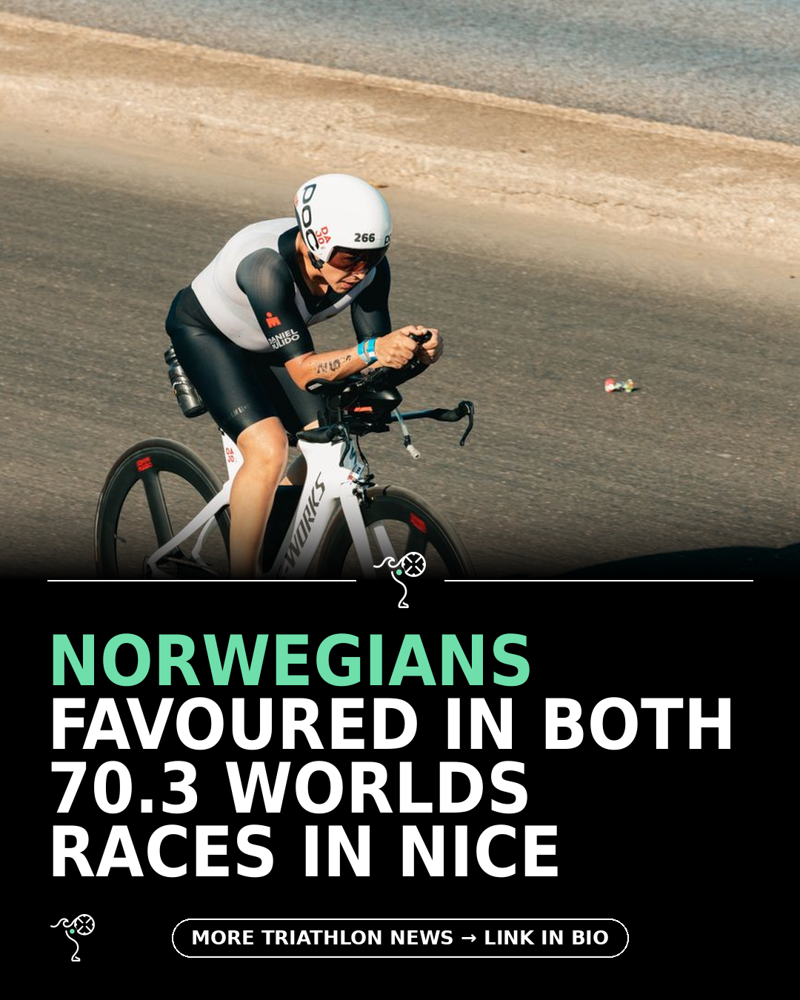

Triathlon News Daily
Wednesday, 09 September 2026 · generated automatically

Today's stories
- Can anyone stop the Norwegians at 70.3 Worlds in Nice?220 Triathlon
- Zwift Ride V2 lands with a focus on smaller ridersDC Rainmaker
- Nine changing robes tested against the Dryrobe220 Triathlon
- Why one athlete still wakes at 4am on rest daysBlog - A Triathlete's Diary
- Inside Apple's secret 50km backyard ultra at HQDC Rainmaker
- What are the best triathlons in the world? Add these 25 iconic races to your bucket list today220 Triathlon